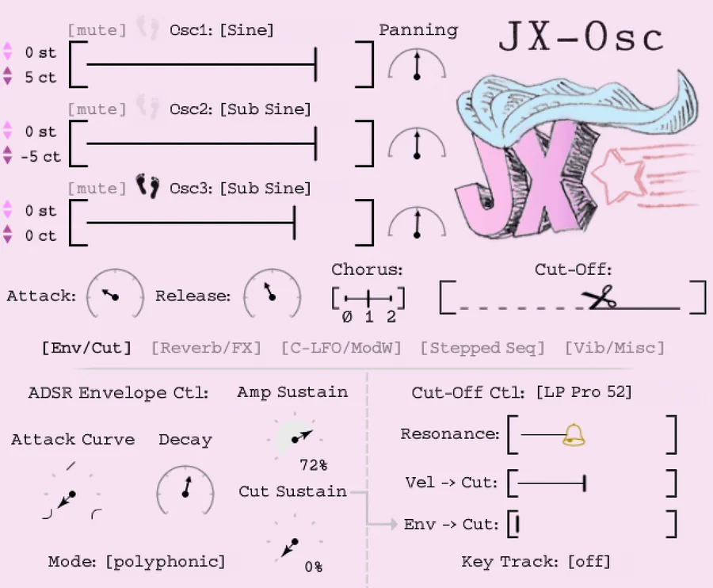
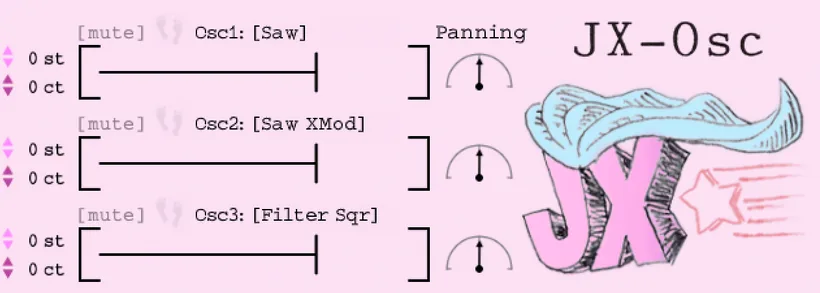
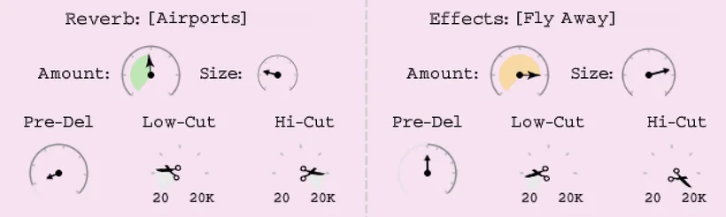
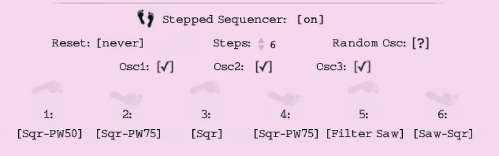
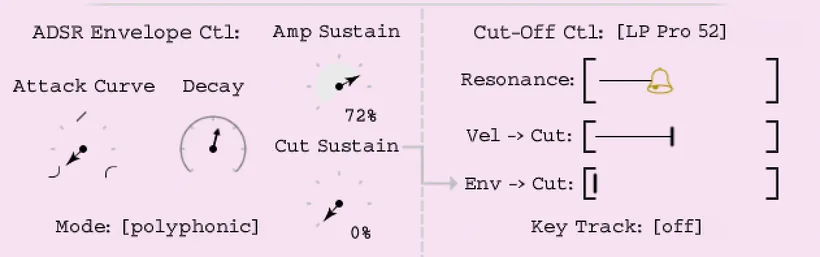
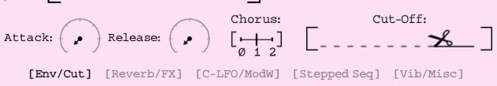

See it move
Watch JX-Osc in action.

A closer look at JX-Osc — lush 80s strings, brass and pads.
An 80s-era analog synth — your vintage sci-fi sidekick.
Built from the raw oscillators of an 80s-era analog synth — then wrapped in a hand-drawn interface. Lush strings, brass and pads with that signature chorus shimmer, across 81 handcrafted presets with no filler.

Four presets, straight from the synth — every sound below was made with JX-Osc alone.
Three oscillator selectors, each with 12 analog shapes from an 80s-era synth — plus per-oscillator pitch and pan.

Cross-synthesis through our favorite outboard reverbs and eurorack effects — 15 reverbs and 15 FX, ready to convolve your sound.

It only steps when a note arrives — swapping the loaded wave shape per note to bring melodies and chords to life.

A creamy LP Pro-52 low-pass with resonance, velocity and key tracking — shaped by a full ADSR with attack-curve and dual sustains.

The lush ensemble chorus that made 80s synths iconic — the sound that beams a pad straight into a sci-fi soundtrack. Plus vibrato, glide, slop and spread.

"The quality, sound and sheer joy these synths bring to producing music is seriously a breath of fresh air — the barn find of the decade."
"True analog sounds. The graphics and design are top, and the presets are a great start point for sonic exploration. A work of love for sure."